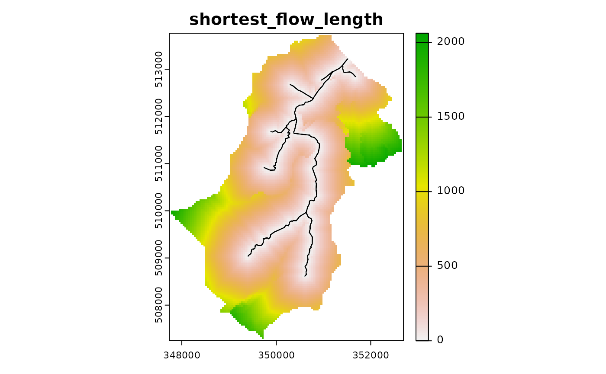

The purpose of this vignette is to provide an outline of the steps needed to build a dynamic TOPMODEL implementation using the dynatopGIS package.
Implementation notes
The dynatopGIS package implements a structured, object orientated, data flow. The steps outlined below create a dynatopGIS catchment object to which actions are then applied to generate a model.
The dynatopGIS package is written using the object orientated framework provided by the R6 package. This means that some aspects of working with the objects may appear ìdiosyncratic for some R users. In using the package as outlined in this vignette these problems are largely obscured, except for the call structure. However, before adapting the code, or doing more complex analysis users should read about R6 class objects (e.g. in the R6 package vignettes or in the Advanced R book). One particular gotcha is when copying an object. Using
my_new_object <- my_objectcreates a pointer, that is altering my_new_object also alters my_object. To create a new independent copy of my_object use
my_new_object <- my_object$clone()Getting started
The dynatopGIS packages works through a number of steps to generate a dynamic TOPMODEL object suitable for use in with the dynatop package. Each step generates one or more layers which are saved as raster or shape files into the projects working directory (which is not necessarily the R working directory). A record of these layers is kept in the json format meta data file.
This vignette demonstrates the use of the dynatopGIS package using data from the Swindale catchment in the UK. This is included in the dynatopData package.
To start first load the library
For this vignette we will store the data into a temporary directory
demo_dir <- tempfile("dygis")
dir.create(demo_dir)and initialise the analysis by creating a new object specifying the location of the meta data file, which will be created if it doesn’t exist.
ctch <- dynatopGIS$new(file.path(demo_dir,"meta.json"))
#> Warning in initialize(...): Creating meta file at/tmp/Rtmph6TN1f/
#> dygis32fa137b03b3/meta.json
#> Warning in private$check_meta(verbose): No checks on the meta are currently
#> performedAdding catchment data
The basis of the analysis is a rasterised Digital Elevation Model (DEM) of the catchment and a vectorised representation of the river network with attributes. Currently these can be in any format supported by the raster and sp libraries respectivly.
However, within the calculations used for sink filling, flow routing and topographic index calculations the raster DEM is presumed to be projected so that is has square cells such that the difference between the cell centres (in meters) does not alter.
For Swindale the suitable DEM and channel files can be found using:
dem_file <- system.file("extdata", "SwindaleDTM4mFilled.tif", package="dynatopData", mustWork = TRUE)
channel_file <- system.file("extdata", "SwindaleRiverNetwork.shp", package="dynatopData", mustWork = TRUE)Since the DEM is quite high resolution for the purposes of this vignette we will aggregate it to 100m.
Either the DEM or channel files can be added to the project first. In this case we add the DEM with
ctch$add_dem(agg_dem)
#> Loading required namespace: igraphNote: An additional row and column of NA is added to each edge of the DEM. All raster layers in the project have the same projection, resolution and extent of the extended DEM.
Adding river channel data is more complex. The add_channel method requires a SpatialLinesDataFrame or SpatialPolygonsDataFrame as generated by the sp package. Each entry in the data.frame is treated as a length of river channel which requires the following properties
- endNode - a label for the downstream end of the river length
- startNode - a label for the upstream end of the river length
- length - the length in meters
Additional properties are currently kept but ignored with two exceptions: - id - this is copied to original_id with a warning since id is used internally - width - if the channel is specified with a line sections then the width property is used to buffer the lines to create channel polygons.
Since it is possible that these properties are present in a data file under different names the add_channel method allows for renaming. To illustrate this let us examine the river network for Swindale
sp_lines <- rgdal::readOGR(channel_file)
#> OGR data source with driver: ESRI Shapefile
#> Source: "/home/travis/R/Library/dynatopData/extdata/SwindaleRiverNetwork.shp", layer: "SwindaleRiverNetwork"
#> with 19 features
#> It has 11 fields
#> Integer64 fields read as strings: length
#> Warning in rgdal::readOGR(channel_file): Z-dimension discarded
head(sp_lines)
#> class : SpatialLinesDataFrame
#> features : 6
#> extent : 349884.5, 351675.7, 508614.5, 513074.7 (xmin, xmax, ymin, ymax)
#> crs : +proj=tmerc +lat_0=49 +lon_0=-2 +k=0.9996012717 +x_0=400000 +y_0=-100000 +datum=OSGB36 +units=m +no_defs
#> variables : 11
#> names : name1, identifier, startNode, endNode, form, flow, fictitious, length, name2, sinkdepth, Shape_Leng
#> min values : Hawthorn Gill, 16D0AC09-E0B6-4727-83B8-567E8DE9C533, 1FDBFCFF-799C-41CF-A2CB-8A56368BD438, 1FDBFCFF-799C-41CF-A2CB-8A56368BD438, inlandRiver, in direction, false, 29, NA, -1, 29.1895135281
#> max values : Mosedale Beck, ED03FEDD-0F4B-40C7-86E8-6F0EA8BAC182, D968F174-FB80-404A-A4A7-2862CC722482, D649B60C-E631-47FA-971E-CA388DBDDE63, inlandRiver, in direction, false, 740, NA, -1, 739.76377764The main properties are present under appropriate names and a call to the add_channel method with no options would be successful. However if we want to carry over the addition information in the “indentifier” as “channel_id” a named vector giving the variable names to be used could be provided. In this case:
property_names <- c(channel_id="identifier",
endNode="endNode",
startNode="startNode",
length="length")The river network can then be created in the correct format by
ctch$add_channel(sp_lines,property_names)
#> Warning in private$apply_add_channel(channel, property_names, default_width):
#> Modifying to spatial polygons using default widthSince the data set for Swindale does not contain a channel width the default width of 2m is used.
Computing Basic Properties
So far, the DEM and channel data exist in isolation. Next, we compute some basic summaries for each square in the DEM, specifically: - land area - the area in the DEM cell covered by land - channel area - the area in the DEM cell covered by channel - channel id - the id of the channel within the cell, corresponding to the id in the channel object.
If multiple river lengths intersect a DEM cell the properties of the channel length with the largest area of intersection are used.
This computation is done by calling
ctch$compute_areas()
#> Warning in .local(x, ...): This function is only useful for Raster* objects with
#> a longitude/latitude coordinatesGetting and plotting catchment information
The dynatopGIS class has methods for returning and plotting the GIS data in the project. The names of all the different GIS layers stored is returned by
ctch$get_layer()
#> [1] "dem" "channel" "land_area" "channel_area" "channel_id"These can be plotted (with or without the channel), for example
ctch$plot_layer("dem", add_channel=TRUE)
or returned, for example
ctch$get_layer("dem")
#> class : RasterLayer
#> dimensions : 163, 124, 20212 (nrow, ncol, ncell)
#> resolution : 40, 40 (x, y)
#> extent : 347734, 352694, 507244, 513764 (xmin, xmax, ymin, ymax)
#> crs : +proj=tmerc +lat_0=49 +lon_0=-2 +k=0.9996012717 +x_0=400000 +y_0=-100000 +ellps=airy +towgs84=446.448,-125.157,542.06,0.1502,0.247,0.8421,-20.4894 +units=m +no_defs
#> source : dem.tif
#> names : dem
#> values : 262.8004, 710.7533 (min, max)All layers are returned as RasterLayer objects with the exception of the channel layer which is returned as a SpatialPolygonsDataFrame object. The complete meta data file can be retrieved with
tmp <- ctch$get_meta()Filling sinks
For the hill slope to be connected to the river network all DEM cells must drain to those that intersect with the river network.
The algorithm of implemented in the sink_fill method ensures this is the case. Since the algorithm is iterative the execution time of the function is limited by capping the maximum number of iterations. If this limit is reached without completion the method can call again with the “hot start” option to continue from where it finished.
For Swindale, where the example DEM is already partially filled the algorithm only alters a small area near the foot of the catchment.
ctch$sink_fill()
raster::plot( ctch$get_layer('filled_dem') - ctch$get_layer('dem'),
main="Changes to height")
Computing properties
Two sets of properties are required for Dynamic TOPMODEL. The first set is those required within the evaluation of the model; gradient and contour length. The second set are those used for dividing the catchment up into Hydrological Response Units (HRUs). Traditionally the summary used for the separation of the HRUs is the topographic index, which is the natural logarithm of the upslope area divided by gradient.
These are computed using the formulae in Quinn et al. 1991.
The upstream area is computed by routing down slope with the fraction of the area being routed to the next downstream pixel being proportional to the gradient times the contour length.
The local value of the gradient is computed using the average of a subset of between pixel gradients. For a normal ‘hill slope’ cell these are the gradients to downslope pixels weighted by contour length. In the case of pixels which contain river channels the average of the gradients from upslope pixels weighted by contour length us used.
These properties are computed in an algorithm that passes over the data once in descending height. It is called as follows
ctch$compute_properties()The plot of the topographic index shows a pattern of increasing values closer to the river channels
## plot of topographic index (log(a/tan b))
ctch$plot_layer('atb')
Adding additional layer
Properties may come in addional GIS layers. To demonstrate the addition of an additional layer we will extract the filled dem
tmp <- ctch$get_layer("filled_dem")then seperate it into a layers representing land above and below 500m.
tmp <- raster::reclassify( tmp,
matrix(c(0,500,NA,
500,1000,-999),
byrow=TRUE))The resulting raster object can now be written to a file
raster::writeRaster(tmp,file.path(demo_dir,"greater_500.tif"))which is added to the meta data with
ctch$add_layer("greater_500",file.path(demo_dir,"greater_500.tif"))
ctch$get_layer()
#> [1] "dem" "channel" "filled_dem" "land_area" "channel_area"
#> [6] "channel_id" "gradient" "upslope_area" "atb" "greater_500"Flow distances and ordering
Since dynatop simulations make use of ordered HRUs to work downslope, a metric is required to order the downslope sequencing. The calculation of four such metrics is supported
- shortest flow length - the shortest length based on the pixel flow paths to a channel
- Dominant flow length - the distance to a channel moving in the dominant (largest fraction) flow direction from any grid cell
- Expected flow length - the distance to the channel based on a weighted average of the downslope flow lengths. Weights are given by the fraction of flow in each direction.
- Band - A strict computational order, starting at the channel arranged such that if all pixels in band \(i+1,i+2,\ldots\) are evaluated the inflows to band \(i\) are known.
The computation is initiated with
ctch$compute_flow_lengths()The additional layers can be examined as expected
ctch$get_layer()
#> [1] "dem" "channel" "filled_dem"
#> [4] "land_area" "channel_area" "channel_id"
#> [7] "gradient" "upslope_area" "atb"
#> [10] "band" "shortest_flow_length" "dominant_flow_length"
#> [13] "expected_flow_length" "greater_500"
ctch$plot_layer("band")
Classifying into Hydrological Response Units
Methods are provided for the classification of the catchment into Hydrological Response Units (HRUs). The classifications generated in this process are augmented with a further distance based separation when generating a dynatop model (see following section).
By definition each channel length is treated as a single HRU. Two ways are provided for dividing the hillslope up into HRUs. The first way is splitting where one or more landscape properties are divided up into classes and HRUs defined by each unique combination of classes. The second burning enforces classes onto distinct areas.
The classify method of a dynatopGIS allows the use of both methods, first splitting then burning to create hillslope HRUs.
Splitting
To split a catchment into HRUs the breaks between the classes and potentially the distance to the channel need to be specified. This is done by forming a named list of cuts. The names correspond to layers of GIS data within the dynatopGIS object. The values of the variables should be numeric and are used as follows:
-
NA: use the layer ‘as is’; i.e. presume it is already classified - Single value: defines the number of splits which are automatically selected
- Vector of values: treated as the breaks between classes
To demonstate this HRUs for Swindale based on dividing the topographic index into 21 classes and using the band distance measure ‘as is’ can be generated by
ctch$classify("atb_band_split",cuts=list(atb=20,band=NA))or if the land greater then 500 in altitude is treated as a single HRU using a ‘burn’
ctch$classify("atb_band_500_split",cuts=list(atb=20,band=NA),burns="greater_500")Note that by giving the area to be burnt in a negative value when it was generated above we have ensured that the values do not clash with those generated by the cuts which (except potentially when a cut is NA) will always be positive.
The final classificationcan be plotted as with any other layer
ctch$plot_layer("atb_band_500_split")
In the meta data the cuts and burns used to generate the layer are recorded. These can be retrieved with
ctch$get_class_method("atb_band_500_split")
#> $cuts
#> $cuts$atb
#> [1] 8.636124 9.265628 9.895133 10.524637 11.154142 11.783646 12.413151
#> [8] 13.042655 13.672160 14.301664 14.931169 15.560673 16.190178 16.819682
#> [15] 17.449187 18.078691 18.708195 19.337700 19.967204 20.596709 21.226213
#>
#> $cuts$band
#> [1] NA
#>
#>
#> $burns
#> [1] "greater_500"Generating a dynamic TOPMODEL
A Dynamic TOPMODEL suitable for use with the dynatop package can be generated using the create_model method. This uses an existing classification to generate the model. The required model structure is given in the vignettes of dynatop package and is not described here in details.
Since dynatop simulations make use of ordered HRUs to work downslope, a classification which used a distance layer (see earlier section) which represents the ordered downslope sequencing of the pixels is recommended. It is strongly recommended that the ‘band’ distance metric is used directly as shown below.
Even if a distance layer is not used in the classification one must be given to the create_model method, so the resulting HRUs can be ordered.
For example, in the case of the division of Swindale by topographic index into 21 classes and the bands directly the resulting model can be generated by
ctch$create_model("new_model","atb_band_split","band")
#> The following Channel HSUs are outflows: 1Looking at the files within the demo_dir folder
list.files(demo_dir,pattern="new_model*")
#> [1] "new_model.rds" "new_model.tif"shows that an addition raster map of the HRUs has been created in new_model.tif along with a file new_model.rds containing a model suitable for dynatop
The map of HRUs can be plotted as with any layer
ctch$plot_layer("new_model")
The values on the map correspond to the ìd column of the hillslope table in the dynatop model.